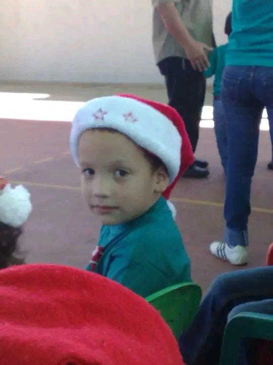
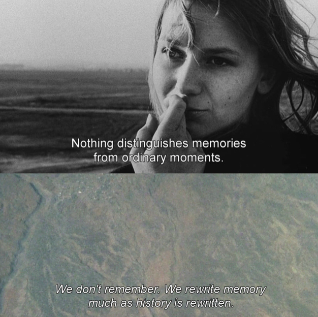
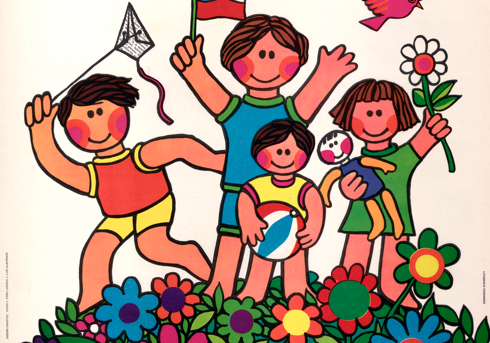
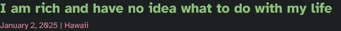

fragmentos de quién fui
30 de julio de 2025 Durmiendo la promesa de hacer un gran escrito, sólo hablaré de fragmentos que recopilé hace menos de un mes sobre la persona que alguna vez fui. Había compartido los hallazgos con Papuchi pero creo que es suficiente como para escribir un post acerca de una memoria bastante ofuscada. Como te dije anoche 29 de julio, me gustan mis fotos de niño 5 años para abajo. Lo demás resulta una memoria que no me gusta acceder, no me gusta adentrarme. Pero recién, buscando nombres de usuarios viejos, encontré pequeños escritos que me parece que son suficientes para hablar de ellos.
red social de programadores

La descubrí cuando tenía 13 años y como andaba en la onda de querer "aprender a programar", se me hizo genial y una buena alternativa a Facebook. Semanalmente había una pregunta que todos podían responder en un post para generar interacción en la mini red social.
- dev goals for 2019?Mi respuesta fue:
- Just learn more stuff, improve, be able to apply my skills in my life and serve others, too.7y
Hay muchos mensajes así. A los 13 años buscaba ser útil (?) y no tenía en perspectiva muchas cosas. Como mi única vida era crónicamente en línea me perdí de saber muchas, pero *muchas* cosas importantes fundamentales para la persona normal de toda la vida. Y ese es el chiste: nunca sabes qué es hasta que lo tienes en frente. Ya había jugado más de mil horas en juegos tontos de PC y sabía un segundo idioma, pero no supe hasta como los 15-16 que con el idioma que naces, los hijos usualmente suelen tener conversaciones con su padre, incluso conversaciones largas. Es que un día había ido a jugar fútbol, creo que fue, y me quedé algo muy tarde. Un amigo en ese entonces, Julio, me llevó a mi casa y yo estaba atrás en el auto mientras los veía padre e hijo conversar. Me acuerdo haber sonreído y haberme alegrado por ellos dos, pero luego me empecé a cuestionar por qué mis únicas conversaciones con mi padre en ese entonces habían sido "te quiero mucho" y derivados.
¡no te puedo creer!
Tengo 20 años, pero toda mi vida he estado como que algo me falta. Algo fundamental. Puedo saber cosas de muchos temas, puedo ser funcional, comportarme como adulto, hablar correspondiente a mi edad, pero hay algo, Daniela, que no está a mi alcance y no sé lo que es. Como si fuera un buen conversador y un ingeniero del lenguaje, pero iletrado. Como quien es fanático del arte pero no conoce los lápices y los nombres de los colores. Y no soy como un ciego que ya lo vio todo pero perdió la vista, sino alguien con ojos que han solo visto 4 paredes toda su vida. Es divertido a veces, eso sí. Tampoco todo es tragedia. Como decirte que ya le he dado una calada a un pito pero no había probado un café de máquina hasta un jueves que nos vimos.
Todo ha sido buscar conocer.
¿Recuerdas que luego de Sans soleil te había hablado sobre un film muy viejo francés que me daba la misma vibra del film que habíamos acabado de ver? Era La Jetée, film de 28 minutos hecho en 1962. Por Chris Marker. Mismo director de Sans soleil, resultó ser, pero no noté ese detalle cuando estábamos hablando. Y resulta ser que julio 29 era el centenario cumpleaños de Chris Marker. Con razón había pura gente seria riéndose de humor súper sutil niche... Les voy a pegar a todos
 La Jetée (1962) arriba. Sans soleil (1983) abajo. Imagen robada de Twitter.Las memorias son un tema muy humano.
Muy tratado, muy conversado, y de mis favoritos. En mis propias memorias, en las películas, en conversaciones,
uno habla de lo ausente,
de lo que queda.
La docencia
Sigo reexplorando la conversación que tuvimos cuando me preguntaste qué querría estudiar cuando pueda. Desde que tenía 13 he tenido una sola respuesta - informática o algo relacionado a ello. Y en ese entonces no sabía nada tampoco de universidades, eso también. Ni sabía de qué iba la ingeniería, tampoco conocía alternativas para mi futuro - ¿Humanidades? ¿Qué ciencias hay? ¿Qué se puede hacer con un título en [inserte carrera]? No sabía muchas cosas. Por eso ahora se me hace un chiste lo mucho que estuve intentando "aprender a programar". Aprendía, ¿para qué? No tenía proyectos en mente, no sabía qué construir, no sabía qué quería. Imagínate comprar un kit grandísimo de legos y no hacer nada con ellos porque no tienes una sola idea. Bueno, así estuve en mi adolescencia una cantidad considerable de años.
Muuuy anclado a esa idea estuve en mi adolescencia, por lo que parece. 13, 16, siempre en lo mismo. He aquí un post de la red social esta de programadores en la que yo dejé un comentario:
(post de persona random):"(...) I suck (...) I truly have no clue about what I am doing (...)."
Y yo dejé un comentario lol
As an inspiration (it may make you feel better about sucking rn): I joined programming when I was 13, and ([nombre-red-social] like 2 months later!). I dived into the void of choosing and abandoning programming languages; leaving programming because high-school messed all my stuff up and had to stop doing what I liked; say "fuck I can't do this shit", "I'm dumb" and "these guys know what they're doing and I'm not them".
getTime();
33 days before I turn 16. This thing has been with me since scratch. I'm starting to grow up. I feel like I've changed, but certainly not this side of me. Recently I've just damn picked Python and started to code. My actual side project is a Flask web app that gets ETH daily price data since last year, gets DEMA and RSI from it and shows it. Started like 2 damn days ago. Wanna know something? This is the first thing I'm doing (not just some "do-so-you-can-learn" project). I just want to do it and I have the knowledge to do so. :)
ETH: Ethereum. Criptomoneda - como Bitcoin. DEMA, RSI: cosas de economía, de mercados financieros, un análisis todo weon con una lista de precios todos weones a través de los días como para tener una idea toda weona de si el valor de una criptomoneda (o algo de la bolsa de valores) va a subir o va a bajar en el futuro. Y yo sin la mitad de un dólar pensando en esas cuestiones. Énfasis en cómo estuve 3 años "intentando aprender", muriéndome en la espera de por fin tener un proyecto que hacer, el cual terminó siendo una cuestión de mercados financieros, tan alejado de mi mundo, alejado de mis alrededores, tan frío. 3 años me estuve muriendo por crear algo, pero tenía una vista tan chica del mundo que no sabía qué otra cosa podría hacer. Si tan sólo me hubiese animado a escribir o a ver películas como hobby... ¿Por qué nadie me mostró letterboxd en ese entonces?
Ahora unos 5 años después, admito que no sé qué hacía ahí, la verdad. No es mi mundo. Los beepboop no me llaman, al menos no tanto como pensaba. Siento que me estaba forzando. Sólo he sabido escribir. Y escribir. No sé si las ciencias me llamen la atención, aunque las matemáticas se me hacen interesantes debo añadir... Pero no tengo el tiempo para averiguarlo en profundidad. familia ayúdenme diooooos
Tarde o temprano las personas se encuentran, y en ellas su vocación. No hay mayor paz que encontrar qué te está llamando en vida. Usando el típico ejemplo de "pero imagínate ser millonario", la plata sigue sin dar propósito, o al menos el que a mí me gustaría. Recuerdo haber leído de un hombre que vendió su compañía en cosas de tecnología y se volvió rico. No tiene que volver a trabajar más en su vida, y escribió un post que se volvió algo popular.
Entre los párrafos del post, cosas como:
I have infinite freedom, yet I don’t know what to do with it, and, honestly, I’m not the most optimistic about life.(If my ex is reading this. Thank you for everything. I am sorry I couldn’t be what you needed me to be.)
Así terminan los "TE" de STEM, parece.
Hay mucha lucha en el mundo tecnológico actualmente, más que nada en el consumo ridículo de energía y recursos vitales a la vida que está utilizando la inteligencia artificial para entrenar sus modelos y también para hacerlos funcionar en el uso público. ¿Sabías que para los equipos, ordenadores, y toda la cuestión tecnológica con la que se entrenan los modelos de inteligencia artificial, se necesita agua fresca, limpia? No puede ser salada. Nos van a matar. Aparte que no se puede cuantificar precisamente qué daño la IA le está haciendo al medio ambiente, porque son muchas compañías y las compañías pueden no dar los datos, omitir empezar la búsqueda de trabajadores que puedan registrar esos datos, métricas del consumo eléctrico/agua/etc., o pueden simplemente dar datos falsos. Estamos en una zona de niebla al tratar de investigar el impacto terrible al medio ambiente.
A la gente se le está olvidando el mundo que existe cuando sales afuera un rato. Tenías razón. Hay que no permitir por 5 años que estudien ingeniería, de cualquier tipo. Metan a todos los cabros a estudiar humanidades, historia, letras, que den charlas en colegios básica, media, sobre temas que los nutran e inspiren al futuro no a través de historias lejanas ni role models extranjeros, de otros tiempos, o de personas que sean sólo propaganda del sueño capitalista (a lo Elon), sino que su role model sea el vecino que tienen al lado, que son sólo un poco más grande que ellos, pero no hay tanta distancia. De ellos vamos a depender en el futuro. De ellos... Ellos... No...
de los chiquillos cocomelon subway surfers tablet tiktok youtube kids skibidi tralalero no te puedo creer noooooooooooooooooooooooo nos van a morir a los treinta noooooooooooooooooooo
Entonces, si el beepboop no llama la atención, ¿qué puede atrapar mi mente incluso fuera del horario laboral? La tecnología llega a un punto en el que me da asco. Hay una extraña relación entre pasar mucho tiempo trabajando en software y terminar a los años en una granja o en cualquier otro lado alejado de lo digital. He leído historias así, y me imagino que con el cercano porvenir esto se va a intensificar más. Inteligencia Artificial, chatbots, robots inteligentes, quizá un breakthrough en realidad virtual, y así. Conversar con amigos sin pantallas será el nuevo sueño.
(lo siento estoy escribiendo esto muy rápido espero que no sea tan largo entre tema introducción -> principal es para ver si te mando todo este mismo domingo antes de salirj ksldfdsaflsdkjl 3 de agosto de 2025 momento)
Tienes algo de suerte. Te tocó la docencia. Eres quien va a hacer bonito el cercano futuro de nuevas generaciones. Tu vocación no está orientada al frío azul de las pantallas, a códigos y aterradoras cantidades de café y desveladas en una compu, everything just for increasing shareholder value a una compañía americana en tecnología. No, a eso no le estás dando tu vida. Le estarías dando parte de tu vida a la formación del humano que nació un poco después que tú (al menos mientras seas docente en media). Estarás con chiquillos reales en el mundo real, charlando y dictando clases reales en un colegio real... Y el impacto positivo que generes por tu trabajo no será para una innovación que beneficiará a unos clientes de un producto de internet, sino al futuro de tu mayor cercanía, el beneficio será a otras vidas humanas, vocación tan linda. La docencia puede tener una humanidad similar a la de un psicólogo. Ambos trabajan con humanos y buscan mejorar sus vidas - pero sólo el docente puede hacerlo compartiendo un pedazo de la suya.
Quizá estoy romantizando mucho la cosa. Quizá al final trabajes de algo distinto. Sea lo que sea que termines haciendo, lo harás de maravilla.
Todo esto lo escribo domingo 3 de agosto. Si una catástrofe no nos atrofia la vida, vamos a vernos hoy. Y seguiremos nuestro camino del cine y el alcoholismo. Espero que nos vaya bien. Y que te vaya de lo mejor en tu nuevo semestre. Esto más que blog parece una carta muuy larga. Hablando de cartas, he seguido leyendo las cartas de Gabriela Mistral a Doris Dana. Qué uso del lenguaje, tan meloso, tan afectivo, tan amoroso. No sé qué hubiese sido de ellas dos si hubiesen estado alejadas en tiempos de covid. Aquí un extracto de una de sus cartas que yo he guardado en el teléfono porque de verdad, qué cariño que se tenían.
Querida mía, tú conoces el cuerpo, pero no el alma entera de tu pobrecilla. Y así, no has adivinado el infierno puro que ha sido para mí tu silencio de siete o más días. Yo no te exijo maravillas. Te pido solo una tarjeta cada tres días y en ella, diez líneas tuyas. Ayer puse, juntas, tres cartas para ti. Perdona ese amazonas de escritura. Yo he tenido tres días de crisis doble: un dolor tremendo de cabeza y un derrumbe de la esperanza que había puesto en ti. Hace solo horas que he salido de ese dolor hecho de pesantez y de punzadas profundas en la masa cerebral. (Nada digas a Palma.) Yo te agradezco profundamente esa única carta tuya que he recibido. Procuraré creer en que existe un futuro nuestro. Yo creía en eso cuando nos separamos. Pero nada hay tan dañino, tan grave, tan infernal como una ausencia sin palabras. Equivale a la ruptura, es eso: un corte vertical.
E igual te compartiré una carta entera, que la carta tiene un afecto que... Bueno, léela tú.
[17 de abril de 1949]
Vida mía, yo estoy haciendo la conferencia de hoy en este mismo cuadernito. He hecho una parada, porque a cada momento tú me cortas la conferencia. A cada rato... Tu rostro anda en el aire, llena esta casa tan grande, salta como un pájaro aquí y allá. Ay, vida mía, ¿cómo estás tú, qué te han dicho los médicos, dónde estás, qué haces, qué piensas, qué expresión tienen tus ojos, tu boca? ¿Quiénes están contigo? ¿Dormiste bien? ¿Te acuerdas de tu pobrecito? Porque él se acuerda de ti a cada momento. Tú dices: «Guarda esto lindo que tenemos». Sí mi amor, guárdalo tú también. No lo pierdas. Yo lo velo, yo lo cuido de esto. Es muy delicado el amor. Se rompe de nada o se gasta, se envejece, se afea, se vuelve costumbre helada. Cuídalo, mi amor, vela sobre él.
Lo primero es que mejores, que te trates, que tomes todas tus medicinas. Que comas bien, muy bien, sin ahorrar nada en eso que comas. Todo lo que no te haga daño, que comas lo mejor, aunque te cueste caro.
Y que guardes tu alegría, que tengas alegría, a pesar de todo, aunque estemos separados, aunque estés enfermita. La alegría cuenta tanto como el alimento en el mal del hígado. Acuérdate de que estaremos juntos muy pronto, acuérdate. Puedes bajar en ocho o diez días, quedar por aquí una semana y volver a subir. (Cuando bajes, llévate algunos cheques de nuestra cuenta común. Lo olvidaste.)
No olvides que el hígado precisa de agua. Bebe bastante. Y recuerda la Boldina, tratamiento hoy universal del hígado.
Yo quiero verte, luz mía, claridad de mis ojos, único gozo mío, sostén de mi torpeza y mi invalidez y mi sonambulismo. Tú eres mi único apoyo en este mundo y mi única razón de vivir, óyelo, óyelo. No me falles. Y cobra alegría. Si no mejoras, yo puedo pedir enseguida mis pasajes al ministerio. Recuerda esto.
No te digo más hoy. Te beso, te espero, te busco y te tengo,
Tu Gabriela
el amor...
bueno, creo que hasta aquí lo dejaré. sorprendente lo mucho que se puede escribir cuando estás bajo presión, escribí más en dos horas que en unos 3 días. espero que te guste y disfrutes la lectura. que te vaya de lo mejor mañana lunes en la u. cuídate, daniela.